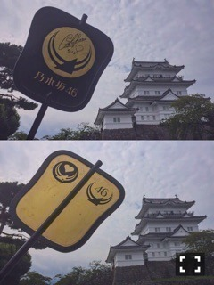
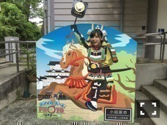

| 2016/10 05 Wed | 斎藤ちはる スイーツチョヒャドナギ(´>∀<｀)ゝ |
ちはるーむへようこそ！
メレブに"スイーツ"と"チョヒャド"と"ナギ"の
呪文をかけて欲しい、斎藤ちはるです。
そう、勇者ヨシヒコにハマってます！
とてもとても！
今更かよ！って思うでしょ？
でも7日から新シリーズ始まるんだよ( ˘ω˘ )
楽しみすぎて早く眠って時を過ぎさせたいよ( ˘ω˘ )
勇者ヨシヒコの中では特に
メレブと仏が好き！
つまりムロツヨシさんと佐藤二朗さん！
メレブの「うむ」と「ばかムラサキばか」と
話し方とヨシヒコの純粋さにうろたえる姿、
仏が呼ばれたのに気付いてなくて
びっくりして何度見もする所と、
意地っ張りな所と話し方、
大好き！！
そして演技が上手すぎる( ;o; )
私もそうなりたい。憧れです！
福田雄一監督とは
「16人のプリンシパルtrois」で
ご一緒させていただき
その時も本当に楽しかったし台本も監督も
全て面白くて幸せでした。
またいつかご一緒できる機会が
あればいいなと切々願っておりますm(_ _)m
勇者ヨシヒコ、一番好きなドラマ！
と言っても過言ではない！
7日楽しみ〜グッズも欲しい〜
-------------------------♡
今日は別冊カドカワの私の連載
"戦国見聞録"のオフショットを載せます！
小田原城、物凄く楽しかった〜
新しい知識を得たり
楽しんで学ぶことが好きなので
ただただ私の楽しい時間でした( ˘ω˘ )笑
中々詳しくは知り得なかった事を
沢山知れてまた１つ、戦国が好きになりました！
是非内容も読んでほしいな〜
雲の白と背景の白が同化して
境目が分からなくなり困惑。笑
マイ軍配を持ちながら、
小田原城と撮りました！！
じゃん！
そして、そして
凄いぞ金箔！！
豪華だ金箔！！

こんな感じで！と私が描いたデザインも
こんなにカッコよくなるとは。
物凄い嬉しいし大切にしますし
もっともっと学ぼう！と思えます(﹡ˆ ˆ﹡)

そして私のお気に入りショット。笑
軍配がぴたりと合う！！
多分軍配とぴたりと合ったのは
私だけだと思う！！笑
皆さんも何か掲げて撮ったら
多分面白いと思います\( ˆoˆ )/
こんな感じにバラエティー豊かな
小田原城&別冊カドカワ。
是非見てくださいm(_ _)m
-------------------------♡
♬ ChihaMusic
「涙がこぼれそう」Champagneさん
声も好きだけど
この落ち着いたロックなテンポが
とても好き。
演奏かっこいいな〜
そして歌詞も。
"今この両目から涙がこぼれそう
笑い笑い笑い過ぎて涙がこぼれそう"
楽しげだけど私はどこか切ない気がする。
その雰囲気がいい！
タピオカはカロリーが高いよ！と
教えて下さった方も多かったので
私は敢えて今日、夜ご飯に
タピオカしか取らないという策をとりました。
やっぱり凄いね！
お腹にたまる！
Lサイズだったから余計にね！
逆に逆にカロリー取りすぎてそうだけど！
気にしないね！
あと、皆さんが教えて下さった
美術館やら個展やら展示会やら
時間がある時に行きたいと思います(/´△`＼)
メモメモ_φ(･_･
皆さんいつもありがとうございます！
おやすみ〜
斎藤ちはる